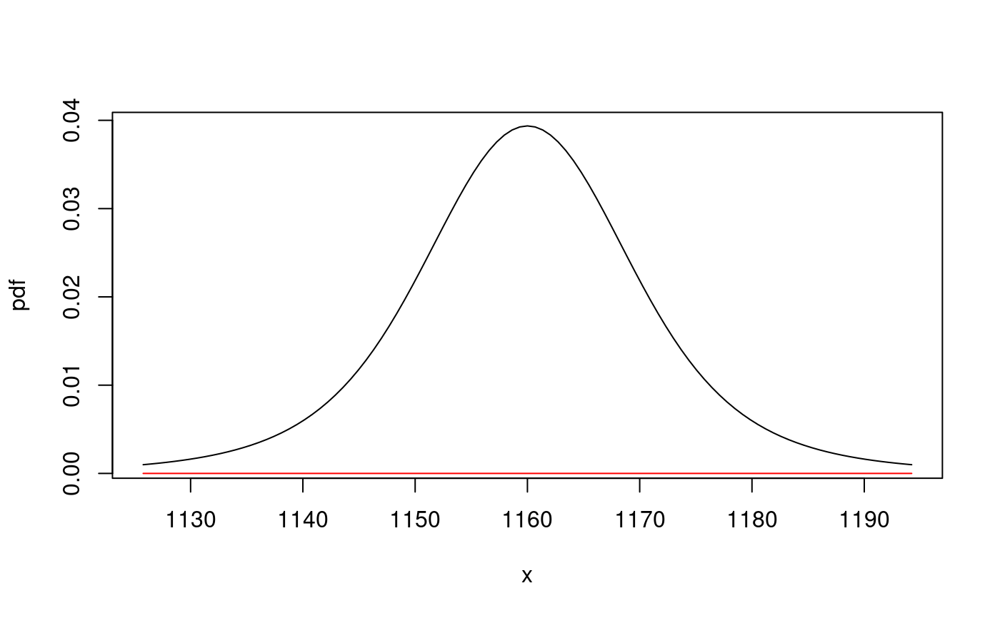

multiStep_dist-methods.RdMulti-step predictions for MixAR models.
multiStep_dist(model, maxh, N, xcond, ...)
| model | a MixAR model. |
|---|---|
| maxh | maximal horizon, a positive integer. |
| N | an integer specifying the number of simulation samples to use, see 'Details. This argument is used only by simulation based methods. |
| xcond | the past values needed for the conditional distribution, a numeric vector of length at least the maximal AR order of the components. |
| ... | used only in some methods, see the details for the individual methods. |
The function currently implements two methods: the exact method due to Boshnakov (2009) and a simulation method described by (Wong and Li 2000) for Gaussian MixAR models but valid more generally.
The simulation method is available for any MixAR model, while the exact method is currently implemented only for models with Gaussian components ("MixARGaussian" class).
multiStep_dist returns a function which can be used to obtain
various properties of the predictive distribution for lags up to
maxh.
If argument N is missing the exact method is tried. Currently
an error will result if the exact method is not implemented for
model.
If argument N is given it must be a scalar numeric value, the
number of simulations to be performed to construct an approximation
for the predictive distributions.
The simulation is done by multiStep_dist. The properties
obtained later from the function returned by multiStep_dist use
the samples generated by the call to multiStep_dist.
To do a simulation with different parameters (with larger N,
call multiStep_dist again.
If xcond is missing multiStep_dist returns a function
with arguments h, what and xcond.
If xcond is supplied, then it is fixed to that value and the
arguments of the returned function are h, what and
'...'. The dots argument is currently used in the case of the
simulation method, see below.
Let f be the function returned by multiStep_dist.
Argument h is the required prediction horizon and can be a
number in the interval \([1,maxh]\). Argument what is the
required property of the predictive distribution for lag
h. If what is a function, it is applied to the simulated
sample for the requested horizon (
currently available only for
the simulation method). If what is a character string, the
corresponding property of the predictive distribution for horizon
h is returned.
Currently possible values for what are:
the probability density function.
the cumulative distribution function.
the location (conditional mean).
the conditional variance, a.k.a (squared) volatility.
the conditional standard deviation, a.k.a volatility.
the conditional skewness.
the conditional kurtosis.
Note that what = "pdf" and what = "cdf" return functions
even in the simulation case. For "pdf" the function is constructed
using density and the "..." arguments passed to f will
be passed on to density if finer control is needed.
If what is none of the above, the raw object is returned
currently (but this may change).
a function as described in 'Details'.
The Details section gives a rather detailed description of the function, so the descriptions below are brief.
signature(model = "MixAR", maxh = "numeric", N = "numeric",
xcond = "numeric")Non-missing N requests the simulation method. The
predictive distribution is approximated by simulating N
of future paths up to horizon maxh and using a
non-parametric estimate. Arguments "..." are passed to
density to allow finer control.
signature(model = "MixARGaussian", maxh = "numeric", N = "missing",
xcond = "missing")Computes the predictive distribution using the exact method.
Returns a function with arguments h, what and xcond.
signature(model = "MixARGaussian", maxh = "numeric", N = "missing",
xcond = "ANY")Computes the predictive distribution using the exact method.
Returns a function with arguments h and what.
(i.e., xcond is fixed to the supplied argument xcond).
Boshnakov GN (2009).
“Analytic expressions for predictive distributions in mixture
autoregressive models.”
Stat. Probab. Lett. , 79(15), 1704-1709.
doi: 10.1016/j.spl.2009.04.009
.
Wong CS, Li WK (2000).
“On a mixture autoregressive model.”
J. R. Stat. Soc., Ser. B, Stat. Methodol. , 62(1), 95-115.
## exact method, without xcond dist <- multiStep_dist(exampleModels$WL_ibm, maxh = 3) tfpdf <- dist(3, "pdf", xcond = c(560, 600)) # xcond is argument to 'dist' here tfcdf <- dist(3, "cdf", xcond = c(560, 600)) ## plot the pdf (gbutils::plotpdf determines suitable range automatically) gbutils::plotpdf(tfpdf, cdf = tfcdf)#> function (x) #> { #> wrk <- (x - wrk)/model@scale #> wrk <- dnorm %of% wrk #> wrk <- inner(wrk, model@prob/model@scale) #> wrk #> } #> <bytecode: 0x55d4836cec20> #> <environment: 0x55d481f01020>## use a simulation method with N = 1000 tf <- multiStep_dist(exampleModels$WL_ibm, maxh = 3, N = 1000, xcond = c(560, 600)) args(tf) # (h, what, ...)#> function (h, what, ...) #> NULL## the exact method may also be used with fixed xcond: tfe <- multiStep_dist(exampleModels$WL_ibm, maxh = 3, xcond = c(560, 600)) ## get pdf and cdf for horizon 3 tfepdf <- tfe(3, "pdf") tfecdf <- tfe(3, "cdf") ## plot the pdf gbutils::plotpdf(tfepdf, cdf = tfecdf)tf(3, "location")#> [1] 605.4452tf(1, "location")#> [1] 605.0603#> [1] 604.2307## larger simulation gives better approximation, in general tf <- multiStep_dist(exampleModels$WL_ibm, maxh = 3, N = 10000, xcond = c(560, 600)) tf(1, "location")#> [1] 604.1339## get the raw data tfs <- tf(1, "sampled") apply(tfs, 2, mean) # location for lags from 1 to maxh (here 3)#> [1] 604.1339 604.3950 604.3542tf(1, "location")#> [1] 604.1339tf(1, "variance")#> [1] 412.8627tf(1, "sd")#> [1] 20.31902#> [1] 413.0203#> [1] 20.3229#> [1] 1.135385#> [1] 1.392797